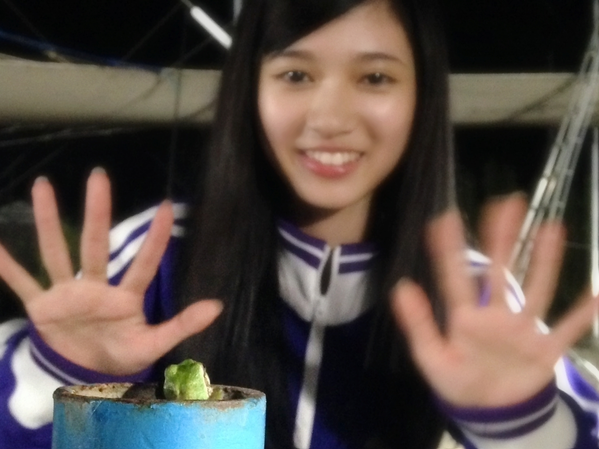
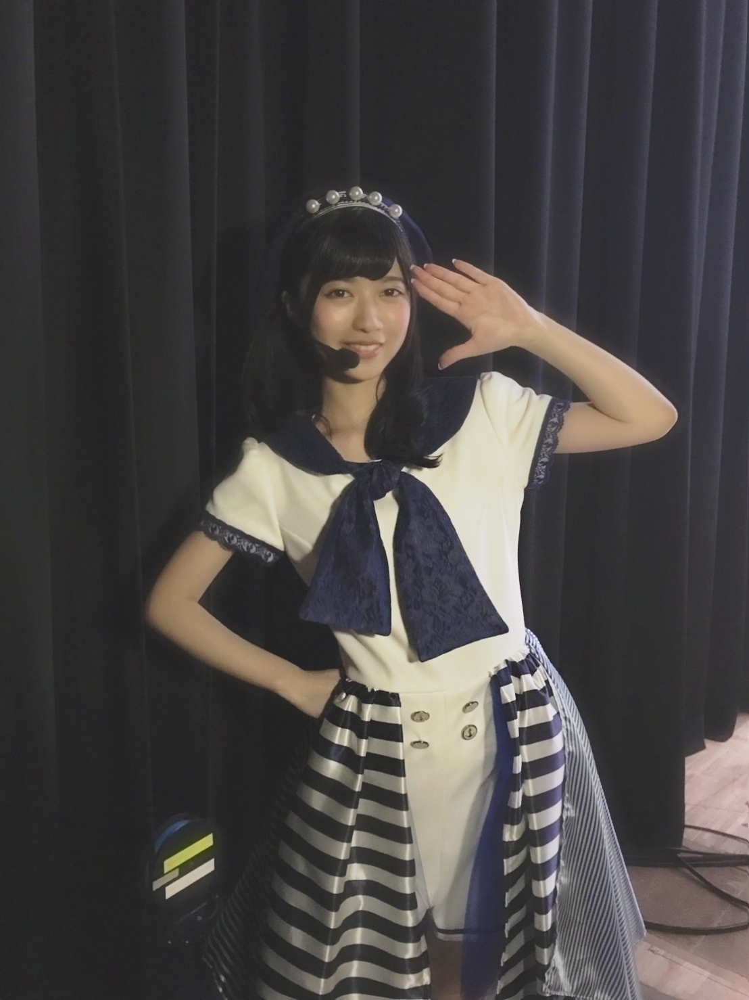

2016/1013Thuトマト大好き寺田蘭世っ（巻舌Ver）
おはようございます
こんにちは
こんばんは
寺田蘭世です！
寺田蘭世巻舌ver設楽さんに言っていただけるのが凄く嬉しくって嬉しくって(^^)！
昔は自分の名前言いづらいなーって思ってたけど
今ではもっと沢山の方に読んでもらいたいなーって
《乃木坂工事中》
自転車、、、
自分でももう、記憶に無いくらいあの時は頭がいっぱいでした。
オンエアを見返してその時の事を思い出しました。
第一は出来無い自分に嫌気が刺したことが大きかったです。
本当に夏のツアー真っ最中の出来事だったのでより切羽詰まってたのかも知れません。
それと私は人に見られて努力するのが得意でないからかもしれません。
出来ないくせに出来ない所を見られるのが苦手だからかな
昔から泣くだとか努力の姿勢は人の居ないところでが基本だったので、、、
あの時一瞬で
色々怖いって感情が湧いてしまいました。
私の心の中にあったのは
皆はもっと凄いことをしてるのに
もちろん私は本当に自転車に乗ったことが無くて
乗ってみたくて
私にとっては難しい挑戦、課題でした。
でも、できる人から見た時それは当たり前やんって
言われてしまいそうだなって被害妄想を広げていて本当にネガティブ思考の私は1人勝手に潰れてました。
だから、練習期間はより孤独な気持ちで居ました。
オンエア凄くいろんな意味で心配だったのですが
オンエアが近づくに連れて
ファンの方はとても優しく
「がんばれー！」等の応援の言葉中には
「自転車乗れなくても
俺が後ろに乗っけてやる！」って言ってくれた方も居ました、、、（´-`）
一応、二人乗りは良くない事ではありますが
その優しさを感じることが出来ました！
でもでも、もう乗れてしまったので二人乗りはお断りします(^^)(^^)
結果は見て感じ取ってもらえてればと思いますが
バナナマンさんの優しさを感じました
ホント、バナナマンさん大好きです（´-`）
お二人の声を聞くと落ち着きます
そして、メンバーもスタッフさんも今回凄く励ましの言葉をいただきました。
感情的だけど
あんまり表にブワーッと出せないのが悩みの1つでもあったので私は今回を機に
なにか変われたんじゃないかなって思います！
なんか、頑張る姿勢はあるけどドジだしちょっと不器用凄く簡単に短くまとめて寺田蘭世を説明するときっとこんなもんです。
それがちらりと覗いた
今回の夏休みの宿題
いつも言ってますが
良かれ悪かれは何にだってあります。
皆違う思考を持ってるから
その人の感性や生き方があるから捉え方は人口の数分あります
だから、まず
私にこう言う場を与えてくれた事そして見て下さったことそして感想を述べてくれた事自体が糧となります
。
なんだか、壮大なスケールなお話になってしまいましたが
自分が勝手に沈んでただけなのかな、、、m(._.)m
やっぱり、乃木坂46に関わっているすべての人は
温かいって実感できた回でしたm(._.)m
収録を見守ってた蛙さん
可愛かった癒やし(> <)

蛙さんに手を振りまってたので手の躍動感が
《おまけ》

アンダーライブにて
舞台裏でこのお衣装可愛い
この画像の季節感が
The夏すぎて見てて寒い(> <)
今日とかも凄く寒かったですが
体調には気を付けて
私も秋冬服買う時間が無くて買ってなかったのですが
流石に買わなきゃ
風邪引きそう、、そう言えばBLTさん12月号（10月24日発売）の撮影を今日しましたソログラビアですいつも通りナチュラルではありますが何処か違う雰囲気がある撮影でした。久々に自分でも手応えを感じられたなーぜひ、色んな方に見て頂きたい今年の秋冬は違うぞ！！頑張るぞっ！
2016/10/13 21:06


コメント(927)
いつか、キャプテンとサイクリング
いってほしいな！！！
きょうもおつかれさまぁ。明日からも頑張ってね！
アンダラ可愛いね！
自転車おめでとう、じょーさん最高だったね笑
勉強で切羽詰まってる中、らんぜのブログ見ると頑張れるよ
来年楽しむために今は大人しく勉強頑張るわ(><)
いつもありがとう！あ～早稲田行きたい
がんばるd(≧▽≦*)
設楽さんも日村さんも本当に優しいよね
能條愛未もね
でもその優しさを誘ったのが
らんぜの頑張りだったんだよ
僕にも
小学生でも出来るのに未だにできない事
結構あるし
その１つを克服したのは
本当に誇って良いと思うぜらんぜ。
ユンです(*^^*)
乃木中本当によかったよ！
おまけの写真も本当にお気に入りです！
アンダーライブでみて
あ、あれの写真は本当に欲しいって
思いましたから
見て本当に嬉しいです！
翻訳終わってまたコメントしますね！
ありがとうー！
乃木中のオンエア見たよ！
自転車に乗れてよかったね
夏のツアー中は自転車の練習なかなか大変だったのかな？
お疲れ様！
10/23は握手会だね、すごく楽しみだよ！
元気に頑張れ
乃木中見たよ〜
らんぜはいろいろ考えてるかもしれないけど、全ツもあった中で1ヶ月で自転車乗るっていうのは結構難しいよね
私も自転車乗るの結構時間かかったから大丈夫だよ
でもあそこまでちゃんと乗れるって思ってなかったからびっくりした！
頑張ったってことが、みんなにもすごく伝わったと思う！
これからもらんぜはらんぜらしく頑張ってください！！
私はずっと応援してるからね(*^^*)
体にも気をつけて頑張ってください！
成功か失敗か
ん〜〜〜成功
乗れてたもの
(^o^)
乃木坂工事中の自転車お疲れ様でした！
やっぱりはじめてやることってのは怖いものよね
蘭世と二人乗りしてみたかったな！（笑）
蛙さんを見てる蘭世が可愛すぎます
おまけの画像も可愛い！！
最近秋、冬服買いまくってます蘭世も買ったらモバメかブログで見せてほしいなー
蘭世の勢い止ま蘭世で服も買ってがんばっていきましょーーー
自転車おつかれさま！！
めっちゃかっこよかったです！
諦めなかったから乗れたんだよね！
私も諦めずに出来ないことに挑戦しようと勇気もらえた！
ありがとう！！
らんぜちゃん大好きです
きらら
秋が近づいてきて最近寒くなってきたね！体調気をつけて風邪ひかないようにね！ でも蘭世もモバメで言ってたみたいに俺も秋好き(^^) 春も好き(^^) 気温ちょうどいいし！ふと思ったけど 蘭世って秋とか冬が似合うよね！
次の握手会30部での不安はあると思うけど、やっぱ蘭世はもっと自分に自信を持った方がいいよ！ 俺を含めファンのみんながついてるから蘭世らしく何事もやりたいように言いたいように行動しなね！ 最近はお仕事が多くて大変そうだけど、モバメもブログも送ってくれてありがとう！
楽しみにしてたよ！！！
めっちゃかわいすぎ！！！
楽しい秋冬にしような〜
世界中へピース。
寺田蘭世とてもよきかな
これでサイクリングとかもできるな！
たのしんでな！！
おめでとう〜ーーーー
これからも少しずつ練習してうまくなるといいね♪
オンエア見ました！
思うように行かない時本当に辛いですよね
自分もそうでした！
でもその時に仲間や友達のありがたみを知れるのでいいと思います！
これからも色々なことに挑戦してください！
応援しています！
やっぱりらんぜはフルネームで
てるぁだるぁーーんぜ
って呼びたくなるもん
蘭世すき〜＼(^^)／
普通の人からみたら当たり前の事でも蘭世にとっては本当に大変だったんだと練習の様子を見て思ったよー！！
自転車に乗れたのを見て感動しましたヽ(；▽；)ノ
ほんとにお疲れさま！！
お疲れ様でした！！
ライブ期間の中で日が少ないのにできるようになって凄いと思います！
これからもずっと応援していきます！
自転車感動したよ！
甘い判定とかどうでもよくて
苦手を克服した蘭世が凄い！
2人乗りできないのは残念だけど一緒にスーパーまで買い物に行けるね！！！笑
お疲れ様！！！秋冬、頑張って！！！
蘭世を後ろに乗っけたかったです！！！ダメですけど笑
自転車の、時の髪型めちゃくちゃ最高でした！
体調には気を付けてくださいね！
16枚目の握手会もいきます！
それではおやすみなさい！
ブログ更新ありがとう！
ロッキー@いくちゃん命名
蘭世の勢い止まらんぜーヽ(・∀・)ノ
2日連続更新嬉しいです(^○^)
自転車頑張ったね!!
努力していた姿かっこよかったー
おでこ出してるのかわいい＼(^o^)／
アンダーライブの衣装もかわいい＼(^o^)／
癒されます!!
ありがとう♪
まったく乗れない状態からあそこまでできるようになったことは
素直にすごいよ。
一般的には簡単なことでも
できないことができるようになることは
すごいことだと思います。
蘭世が秋冬もっと頑張ると言っていたので
自分も頑張るね。
自転車乗れるようになってよかったね( ´ ▽ ` )
こっちも安心しました笑
これからも出来ること増やしていけるといいね(´へωへ`*)
応援してます(* • ω • )b
頑張ってるのは乗ってる姿見てて伝わってきたよ！
それとジャージ姿可愛かった！
前髪の感じけっこう好きです(笑)
握手会楽しみ！
乃木中の夏休みの課題は賛否両論あると思うけど、蘭世はやれることはやったと思うよ。
蘭世は気にしないで次のステップに進めるよう頑張ろう！
蘭世が活躍してるところを見ると自分も頑張れます！
次回の乃木中楽しみにしてます^^
おやすみなさいっ！
自転車でスーパーには行きました？
なんか乃木中終わったあと
元気なかったから大丈夫かなー
って思ってたけど大丈夫みたいだね！
今度は車の免許かバイクの免許とか
どんどんグレードアップしていくのも
おもしろそう笑
大丈夫乗れなくても俺の横か後ろに乗せてやる！笑
寺田蘭世とてもよきかな
課題の難易度についても人それぞれだしね。
蘭世の頑張ってる姿を見て頑張ろーって思えるよ！！
急に寒くなってきたし、仕事も忙しそうだから体調には十分気をつけてね。
るぁんぜの勢いとまるぁんぜぇ〜(巻舌感)
自転車乗れてよかった！笑
今度一緒に乗ろ？笑
また更新待ってマース！
見たよー
自転車乗れてたね
すごい成長‼
2日連続のブログ更新ありがとう〜‼︎
乃木中の夏休み課題、ほんとに成功してよかった‼︎
1ヶ月であんなに綺麗になれるようになるなんて‼︎✨
マチアソビがきっかけで甲鉄城のカバネリを見るようになったよ‼︎めっちゃ面白い‼︎
自転車チャレンジ見たよ！
忙しい間を縫っての練習で立派に乗れるようになってて感動しました。できない自分にイラつくこともあったとは思うけど、よく粘ったと思います。
まだ難しいかもしれないけど、自転車で遠出するならどんな所に行きたい？？
これからもお身体に気をつけて頑張ってください。
きしもっちゃん
連日のブログ更新ありがとう！
自転車！凄かったよ！
乗れる人でもスラロームとか一本橋とか普通に難しいと思う
おれも一本橋出来るかなぁ
バナナマンも七瀬も優しかったね♪
でもほんとに成功おめでと！
アンダーライブでのその衣装おれも好き！
蘭世似合ってる！かわいいよー！
では！また書きまーす！
おれ巻舌出来ねぇや・・・(..)
練習しよ
コメントする